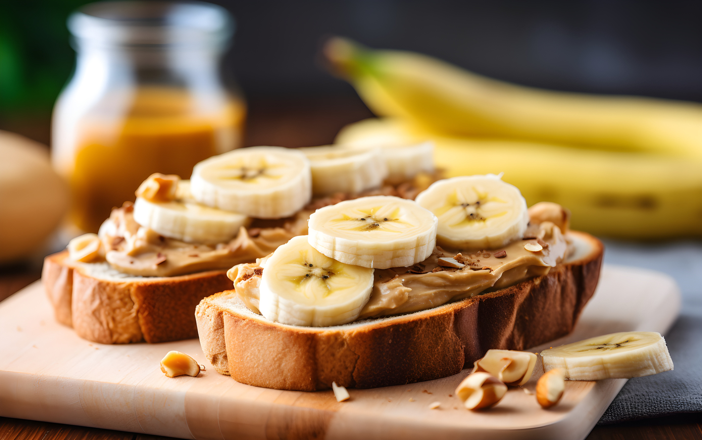

Peanut Butter And Banana Sandwitch
Home

Description
This is Recepe to make peanut butter sandwitch. Peanutbutter banana sandwitch is a quick and easy to make snack. If you are looking to make something tasty and quick then you have arrived to the right recepe.
Ingredients
- 1 Banana.
- 2 slices of bread (white or brown).
- Peanut butter.
- Spread peanut butter on both sandwitches.
- Peel of the banna skin, then chop you banana into mutliple slices.
- Place the slices on top of one slice of bread in any order.
- Add the slice the other slice on top of the bread with the the banana slices and enjoy.